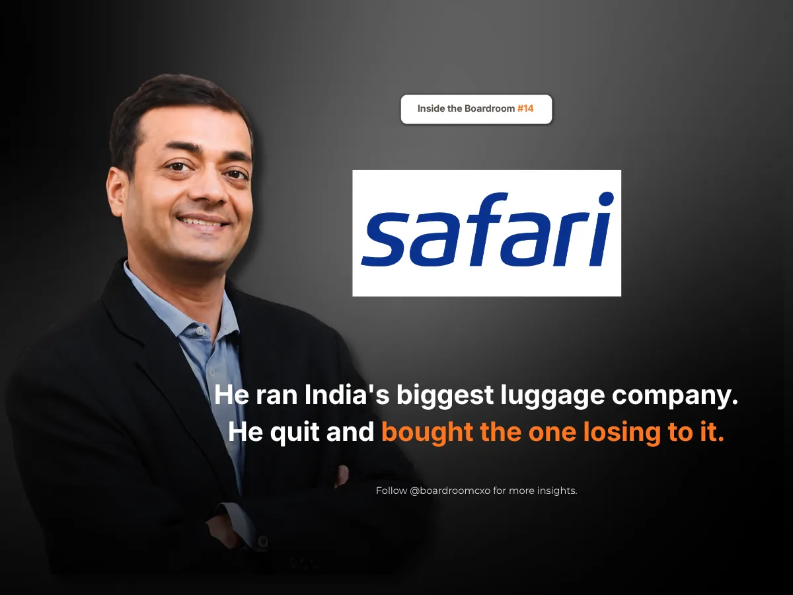

Key Takeaways
- In September 2011, Sudhir Jatia used ₹29 crore of his own money to buy 56.55 percent of Safari Industries, then doing about ₹70 crore a year.
- Jatia kept one brand, cut lines that were not selling, outsourced manufacturing to China, Bangladesh and Vietnam, and replaced warranty-damaged bags instead of repairing them.
- Boards should judge an operator by whether they can rebuild a business's fundamentals from a standing start, not by the size of the company they last ran.
In September 2011, a man who had just run India's largest luggage company bought 56.55 percent of a company one tenth its size, using ₹29 crore of his own money.
He bought the competition.
The Company He Bought
Sudhir Jatia had been Managing Director of VIP Industries, the biggest luggage maker in India, until he resigned in early 2010. In April that year the founder's daughter took the job.
What he bought instead, Safari Industries India Ltd., was doing about ₹70 crore a year and keeping almost none of it. Profit was around ₹2 crore, two rupees kept for every seventy that came in, which is why the whole company was valued at around ₹50 crore, less than it sold in a year. Sales had grown just 6.2 percent a year for six years. It sold a small range, mostly to families buying one suitcase a decade, and sat far behind in a market where VIP held about 60 percent.
Most people who reach the top of an industry and leave do not start again at the bottom of it.
He did.
One Brand, No Factories, No Repairs
He took the operating job himself and started cutting. Every product line that was not selling had to go; he kept one brand instead of many, so the range stayed small and the volumes stayed real. Manufacturing moved almost entirely to outside suppliers in China, Bangladesh, and Vietnam, so he could launch faster and hold less stock. And bags damaged under warranty were replaced, not repaired.
A repair network costs money forever. A replacement rule forces the factory to stop sending out weak bags.
Bigger Than the Company He Left
Sales reached ₹355 crore by FY17. They crossed ₹2,047 crore in FY26, up 15.5 percent in a year, with net profit of ₹167.8 crore. Market share went from about 2 percent to over 23 percent.
By FY26, the company he bought for ₹29 crore was bigger than the company he left had been in FY10, the year he walked out of it.
Not Applause
The market is not applauding. The stock has fallen sharply this past year, margins are tightening, and a wave of new design-led brands is attacking the category he built. He still owns about 45 percent of it.
Losing the top job is not the end of a career. It is only the end of one company's version of you.
The Boardroom Read
Most executive searches for a turnaround operator look for someone who has already done it, at a company that already had scale. Jatia's record argues for a different read: the strongest signal is not the size of the company someone last ran, but whether they can rebuild a business's fundamentals, product range, sourcing, and warranty economics, from a standing start with no brand equity behind them.
Boards rarely ask a departing CEO what they would build with a fraction of the capital and none of the name recognition. Jatia's answer to that question has grown bigger than the company he left.
The market prices the company you currently run. It rarely prices what you would build again from nothing.
Frequently Asked Questions
Why did Sudhir Jatia leave VIP Industries?
Sudhir Jatia had been Managing Director of VIP Industries, India's largest luggage maker. He resigned in early 2010, and in April that year the founder's daughter took over the role.
What did Sudhir Jatia pay for Safari Industries and how much did he own?
In September 2011, Jatia bought 56.55% of Safari Industries India Ltd. using ₹29 crore of his own money. At the time, Safari was doing about ₹70 crore in annual sales with roughly ₹2 crore in profit, valued at around ₹50 crore.
What operational changes did Sudhir Jatia make at Safari Industries?
He took the operating job himself and cut every product line that was not selling, keeping one brand instead of many so volumes stayed real. He also moved manufacturing almost entirely to outside suppliers in China, Bangladesh, and Vietnam.
Why did Safari Industries move manufacturing outside India?
Outsourcing to suppliers in China, Bangladesh, and Vietnam let Safari launch new products faster and hold less inventory, without carrying the fixed cost of its own factories.
How has Safari Industries grown since Sudhir Jatia took over?
Sales reached ₹355 crore by FY17 and crossed ₹2,047 crore in FY26, up 15.5% in a year, with net profit of ₹167.8 crore. Market share went from about 2% to over 23%.
What challenges is Safari Industries facing now?
The stock has fallen sharply over the past year, margins are tightening, and a wave of new design-led luggage brands is attacking the category Safari built. Jatia still owns about 45% of the company.
Sources
- Business Standard, Safari Industries (India) reports flat Q4 profit; revenue rises 12%, May 2026
- Business Standard, VIP Q4 net surges 79% to Rs 16 cr, May 2011
Related Reading
Venu Nair Took the Job Nobody Wanted at Shoppers Stop. He Turned It Around in About a Year.
Read → R · 02 Founder Leadership · September 2026Costs Were Rising Everywhere. Sameer Khetarpal Cut Domino's Prices Anyway.
Read → R · 03 Founder Leadership · August 2026Everyone Said Royal Enfield Was Finished. Siddhartha Lal Asked for Two Years.
Read →Building the leadership bench for your next chapter?
Whether you're buying into a category laggard or rebuilding a business from a standing start, we place the operating leaders who can rebuild product, sourcing, and go-to-market from scratch, not just manage what already works.
Brief Us on a Mandate See all Sales & Retail roles we fill →